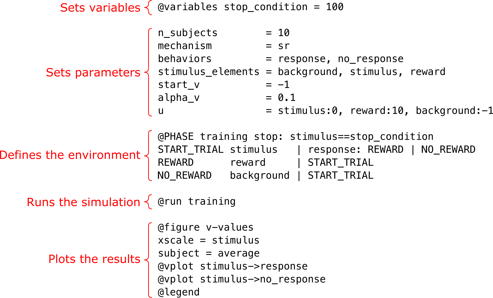

Scripting Language Reference Manual¶
This section describes the structure of a simulation script and the scripting language that is used to specify the system to simulate.
Structure of a script¶
The main components of a script are the following:
Assigning values to parameters and global variables.
One or more phase blocks which specifiy the environment with which the subject interacts, in particular the sequence of stimuli to present to the subject, and how it depends on the subject’s behavior.
Run the simulation using one or several @run commands.
Postprocessing: Plotting and/or exporting the simulation data.
The below example script highlights the typical structure.
Basic script language syntax¶
The specification of a simulation consists of the components described in Structure of a script. This section describes the basic syntax in the scripting language used in these components.
Stimulus specification¶
Stimuli are specified in various parts of the script, mainly on a phase line in a phase block, where it tells the simulator which stimulus to present to the subject.
A stimulus consists of one or several stimulus elements. (The stimulus elements are specified with the parameter stimulus_elements.) A stimulus that consists of more than one element is called a compound stimulus. In a stimulus specification, each stimulus element has an intensity (which is any number). If no intensity is specified, the intensity 1 is assumed.
A stimulus is specified as a comma-separated list of stimulus elements, optionally with the intensity in brackets after the stimulus element name,
for example e1,e2, or e1[0.3],e2,e3[0.9].
Note
The order of the elements in a compound stimulus has no effect on the stimulus representation, so:
e1[0.3],e2,e3[0.9]
represents the same stimulus as:
e3[0.9],e2,e1[0.3]
A stimulus is often a single stimulus element, so a phase line that exposes the subject to a stimulus may look like:
L1 e | L2
If the stimulus to present to the subject is a compound stimulus of the elements e1, e2, and e3, it looks like:
L1 e1,e2,e3 | L2
but in general the syntax is:
L1 e1[i1],e2[i2],...en[in] | L2
where e1, e2, etc. are stimulus elements, and the intensities i1, i2, etc. are scalar expressions.
Spaces¶
Leading and trailing spaces of a line are ignored. Also, spaces before and after assignment operators
(= and :) are ignored:
@variables x = 0
n_subjects = 10
start_v = e1->b1 : 1, e1->b2 : 2, default: 0
Spaces before and after , and | in a phase line are also ignored:
LABEL1 e1, e2, e3 | x = 1, y=2, pull_lever : LABEL2
Valid names¶
Global and local variables, stimulus elements and behaviors can
have a short name (like x and y) or a more descriptive name (number_of_trials,
lever, pull_lever, food, etc.). The rules for these names are the following:
A valid name
must start with a letter or the underscore character
cannot start with a number
can only contain alpha-numeric characters and underscores (A-z, 0-9, and _ )
is case-sensitive (
lever,LEVERandLeverare three different names)cannot be a parameter
cannot be a function or a local phase function (count or count_line)
cannot be
default
Scalar expressions¶
Numbers are specified in various parts of a simulation script, for example:
The value of a parameter:
beta = number
The value of a global variable:
@variables x = number
The value of a local phase variable:
@phase ... L1 | p=number, L2 L2 ...
A number in a phase stop condition:
@phase phase_name stop: s=number L1 s | L2 L2 ...
A number in a phase line condition:
@phase ... L1 s | b=number: L2 | L3 L2 ...
-
@phase ... L1 s[number] | L2 L2 ...
-
@phase ... L1 s | L2(number1),L3(number2)
As input argument to functions:
x = rand(number1, number2) y = choice(number1, number2, [number1, number2])
These numbers must be scalar expressions, that is, an expression of numbers and variables that evaluates to a single (scalar) number.
For example, number literals are scalar expressions:
1, 2, 42, 1.42, -110.33
With a number of global variables defined:
@variables x=1, y=5, z=6.78
the following are also scalar expressions:
x+y, -3*x+5.65*y, 3.2*10**x-1
The output of functions are also single numbers, so the following are also scalar expressions:
rand(x,y), rand(x, y+1), 3*choice(x, y, z, [3, x, y+1])
Functions¶
The below builtin functions are available in Learning Simulator. They can be used in scalar expressions, and in conditions (phase stop conditions and phase line conditions).
choice¶
The function choice returns any of the specified values, each with a specified probability. For example:
x = choice(4, 6, 2, [0.3,0.5,0.2])
returns 4 with probability 0.3, 6 with probability 0.5, and 2 with probability 0.2.
rand¶
The function rand returns a random integer in a specified interval, for example:
x = rand(2, 6)
returns a random integer in the interval [2,6], in other words any of the numbers 2, 3, 4, 5, and 6 with equal probability (0.2) each.
Case-sensitivity¶
Parameter names are not case-sensitive: beta = 0.5 is the same as Beta = 0.5 or BETA = 0.5.
Parameter values that are not user-defined, such as on and off, exact and subset,
and the mechanism names (sr, ac, etc.) are also not case-sensitive.
User-defined names, such as global variables, local phase variables, names of stimulus elements and behaviors,
and phase line labels, are case-sensitive: x and X are different variables (or element names or behaviors or phase line labels).
Comments¶
Comments can be used in the scripting language to make custom comments to the simulation script, and to temporarily “comment out” parts of the script. Comments are ignored by the script parser and therefore not considered in the simulation.
The Learning Simulator scripting language has two kinds of comments: end-of-line comments and block comments.
End-of-line comments starts with # and extend to the end of the current line, for example:
alpha_v = 0.4 # This is a learning rate
# This whole line is also an end-of-line comment
Block comments starts with a line that only contains ### (disregaring leadning and trailing spaces),
and ends with another line that only contains ### (disregaring leadning and trailing spaces). For example:
###
This is
a block
comment
###
Parameters¶
A simulation uses a number of parameters, for example how many subjects that should be simulated. Therefore, in order to run a simulation, a number of parameter values must be set.
See Parameters for the documentation of the parameters.
Global variables¶
A simulation may use custom variables using the @variables keyword.
We call these global variables to distinguish them from
local phase variables.
See Global variables for the documentation of global variables.
Phases¶
The environment that the subject interacts with is specified using one or more @phase blocks.
A @phase block defines the sequence of stimuli that the subject is exposed to, and how the next stimulus
in the sequence depends on the response to the previous stimulus.
See A @phase block for the documentation of a @phase block.
The command @run¶
The command @run starts a simulation.
See The command @run for the documentation of the @run command.
Postprocessing¶
The postprocessing stage of a script processes the data from a finished simulation.
See Postprocessing for the documentation of posprocessing functions.